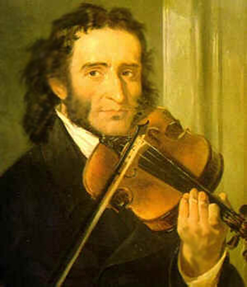
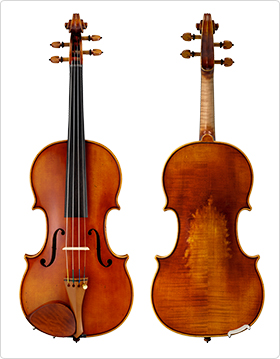

Obras famosas para violin

EL Invierno - Antonio Vivaldi
Antonio Vivaldi (1678-1741) fue un compositor violinista italiano de periodo barroco

La Campanella - Niccolò Paganini
Paganini fue uno de los violinistas mas vituosos de toda la historia

Bienvenido
El violin es uno de los intrumentos musicales mas importantes y reconocidos del mundo. Su historia abarca mas de cuatro siglos de evolucion, innovacion y desarrollo artistico.
En esta pagina exploraremos sus origenes, los grandes maestros que perfeccionaron su construccion, su evolucion a lo largo del tiempo y su importamcia en la actualidad.